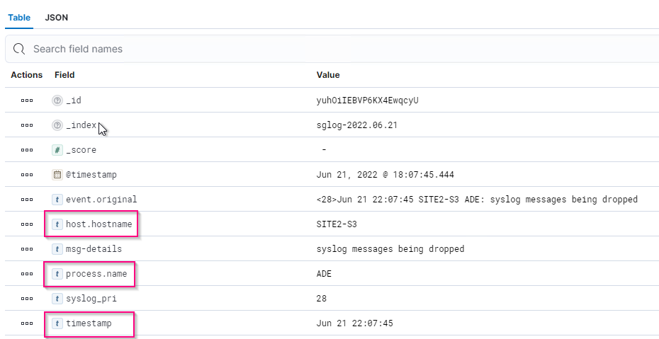
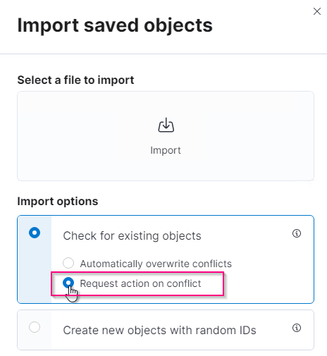
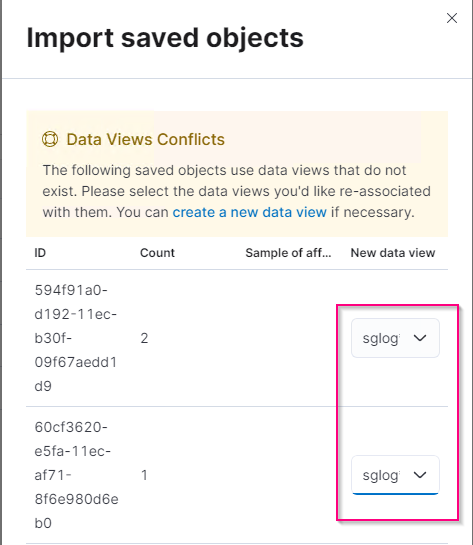

Dokumentationsänderungen beantragen
Dokumentationsänderungen beantragen In GitHub bearbeiten
In GitHub bearbeiten Leitfaden für Beitragende
Leitfaden für BeitragendeStorageGRID-Protokollanalyse mit ELK-Stack
Beitragende
Mit der Funktion StorageGRID 11.6 syslog Forward können Sie einen externen Syslog-Server konfigurieren, um StorageGRID-Protokollmeldungen zu erfassen und zu analysieren. ELK (Elasticsearch, Logstash, Kibana) hat sich zu einer der beliebtesten Log-Analytics-Lösungen entwickelt. Sehen Sie sich an "StorageGRID-Protokollanalyse mit ELK-Video" Zeigt eine ELK-Beispielkonfiguration an und wie sie verwendet werden kann, um fehlerhafte S3-Anforderungen zu identifizieren und zu beheben. Dieser Artikel enthält Beispieldateien der Logstash-Konfiguration, Kibana-Abfragen, Diagramme und Dashboard, die Ihnen einen schnellen Einstieg in die StorageGRID-Protokollverwaltung und -Analyse ermöglichen.
Anforderungen
-
StorageGRID 11.6.0.2 oder höher
-
ELK (Elasticsearch, Logstash und Kibana) 7.1x oder höher installiert und in Betrieb
Beispieldateien
-
"Laden Sie das Paket Logstash 7.x Beispieldateien herunter" + md5 Prüfsumme 148c23d0021d9a4bb4a6c0287464deab + sha256 Prüfsumme f51ec9e2e3f842d5a786156b167a561beb4373038b4e7bb3c8be3d522adf2d6
-
"Laden Sie das Paket Logstash 8.x Beispieldateien herunter" + md5 Prüfsumme e11bae3a662f87c310ef363d0fe06835 + sha256 Prüfsumme 5c670755742cfd5aa723a596ba087e0153a65bcae3934afddddddddd68d
Annahme
Leser kennen die Terminologie und den Betrieb von StorageGRID und ELK.
Anweisung
Zwei Beispielversionen werden aufgrund von Unterschieden in Namen bereitgestellt, die durch grok-Muster definiert wurden. + zum Beispiel definiert das SYSLOGBASE-grok-Muster in der Logstash config-Datei Feldnamen je nach installierter Logstash-Version unterschiedlich.
match => {"message" => '<%{POSINT:syslog_pri}>%{SYSLOGBASE} %{GREEDYDATA:msg-details}'}
Logstash 7.17 Beispiel

Logstash 8.23 Beispiel

Schritte
-
Entpacken Sie das angegebene Muster anhand Ihrer installierten ELK-Version. + der Beispielordner enthält zwei Logstash-Konfigurationsbeispiele: + sglog-2-file.conf: Diese Konfigurationsdatei gibt StorageGRID-Protokollnachrichten ohne Datentransformation in eine Datei auf Logstash aus. Sie können auf diese Weise bestätigen, dass Logstash StorageGRID Nachrichten empfangen oder StorageGRID-Protokollmuster verstehen. + sglog-2-es.conf: Diese Konfigurationsdatei wandelt StorageGRID-Protokollmeldungen mithilfe verschiedener Muster und Filter um. Dazu gehören beispielsweise Drop-Statements, die Meldungen basierend auf Mustern oder Filtern ablegen. Die Ausgabe wird zur Indizierung an Elasticsearch gesendet. + Passen Sie die ausgewählte Konfigurationsdatei entsprechend der Anweisung in der Datei an.
-
Testen Sie die benutzerdefinierte Konfigurationsdatei:
/usr/share/logstash/bin/logstash --config.test_and_exit -f <config-file-path/file>
Wenn die letzte zurückgegebene Zeile der unten angegebenen Zeile ähnelt, weist die Konfigurationsdatei keine Syntaxfehler auf:
[LogStash::Runner] runner - Using config.test_and_exit mode. Config Validation Result: OK. Exiting Logstash
-
Benutzerdefinierte conf-Datei auf den Logstash-Server kopieren.config: /Etc/logstash/conf.d + Wenn Sie config.reload.automatic in /etc/logstash/logstash.yml nicht aktiviert haben, starten Sie den Logstash-Dienst neu. Andernfalls warten Sie, bis das Neueintervall der Konfiguration abgelaufen ist.
grep reload /etc/logstash/logstash.yml # Periodically check if the configuration has changed and reload the pipeline config.reload.automatic: true config.reload.interval: 5s
-
Prüfen Sie /var/log/logstash/logstash-plain.log und vergewissern Sie sich, dass beim Starten von Logstash mit der neuen Konfigurationsdatei keine Fehler auftreten.
-
Bestätigen Sie, dass der TCP-Port gestartet wurde und Sie zuhören. + in diesem Beispiel wird der TCP-Port 5000 verwendet.
netstat -ntpa | grep 5000 tcp6 0 0 :::5000 :::* LISTEN 25744/java
-
Konfigurieren Sie über die StorageGRID Manager-GUI einen externen Syslog-Server, um Protokollmeldungen an Logstash zu senden. Siehe "Demovideo" Entsprechende Details.
-
Sie müssen die Firewall auf dem Logstash-Server konfigurieren oder deaktivieren, damit StorageGRID-Knoten eine Verbindung zum definierten TCP-Port herstellen können.
-
Wählen Sie in der Kibana GUI die Option Management → Dev Tools. Führen Sie auf der Konsolenseite diesen BEFEHL GET aus, um zu bestätigen, dass neue Indizes auf Elasticsearch erstellt werden.
GET /_cat/indices/*?v=true&s=index
-
Erstellen Sie in der Kibana GUI Indexmuster (ELK 7.x) oder Datenansicht (ELK 8.x).
-
Geben Sie in der Kibana GUI in das Suchfeld, das sich in der oberen Mitte befindet, „abgetackte Objekte“ ein. + Wählen Sie auf der Seite gespeicherte Objekte die Option Importieren. Wählen Sie unter „Importoptionen“ die Option „Aktion für Konflikt anfordern“ aus.

Importieren Sie elk<Version>-query-Chart-sample.ndjson. + Wählen Sie bei Aufforderung zur Lösung des Konflikts das in Schritt 8 erstellte Indexmuster oder die Datenansicht aus.

Die folgenden Kibana-Objekte werden importiert: + Query + * Audit-msg-s3rq-orlm + * bycast Log s3 bezogene Nachrichten + * Loglevel Warnung oder höher + * fehlgeschlagenes Sicherheitsereignis + Diagramm + * s3 Anfragen zählen auf Basis von bycast.log + * HTTP-Statuscode + * Audit msg Aufschlüsselung nach Typ + * durchschnittliche s3-Antwort Time + Dashboard + * S3-Request-Dashboard mit den oben genannten Diagrammen.
Sie können nun die StorageGRID-Protokollanalyse mit Kibana durchführen.